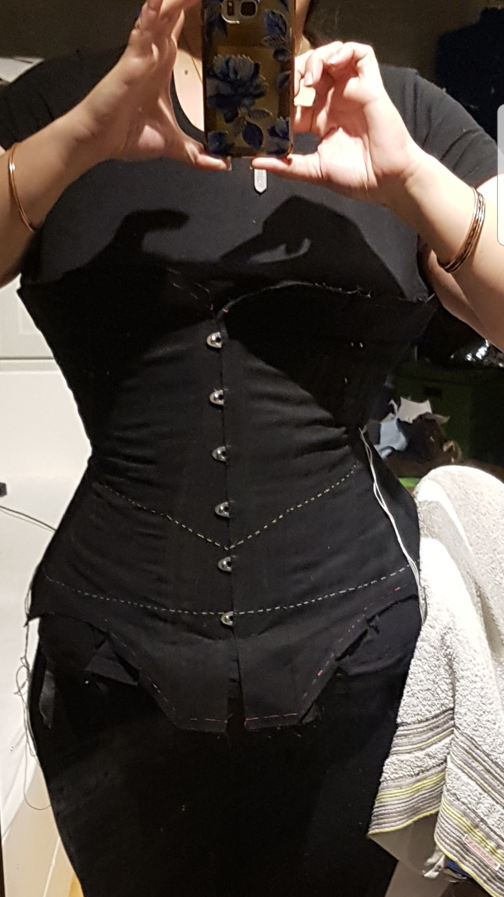
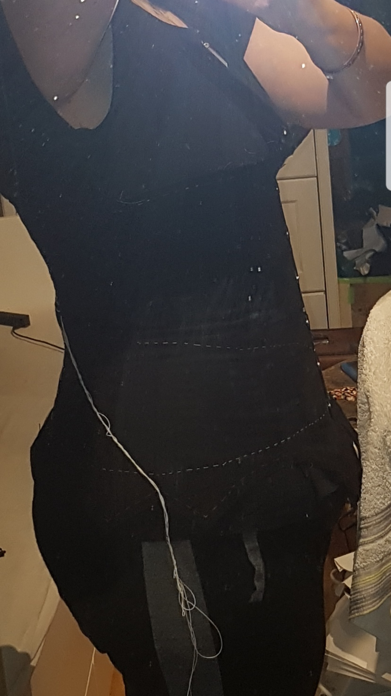
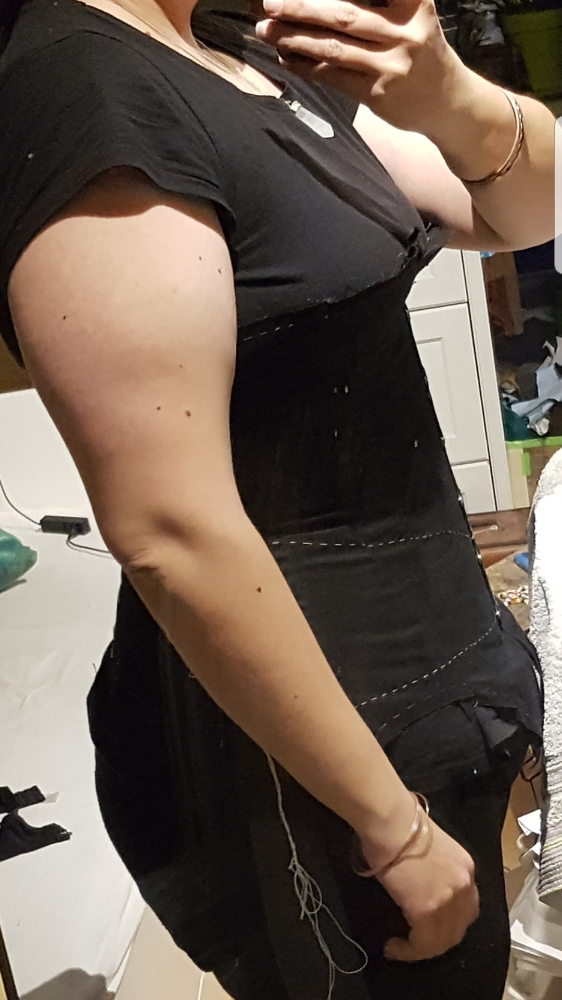
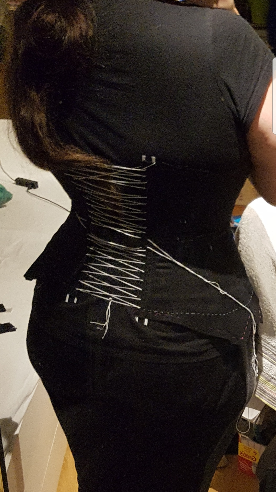
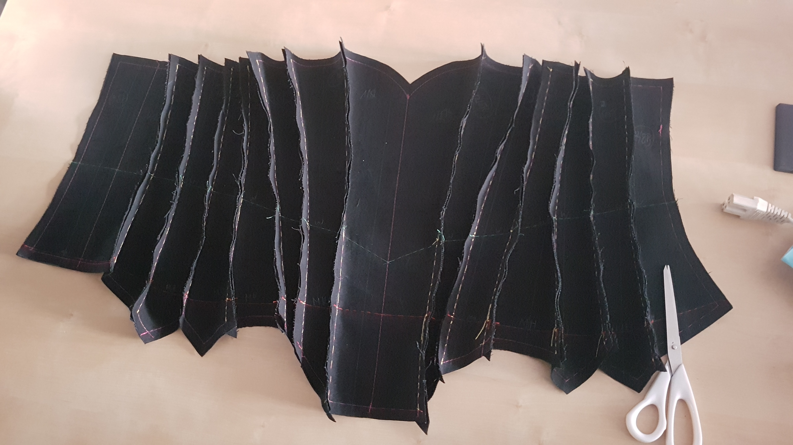

Korsett - Anleitung alt (aus dem Forum kopiert)
Hier die alte Anleitung, die ich mal für das Forum des Verein für historisches Handwerk und lebendige Geschichte e.V. erstellt habe. Da das einiges an Bildern und Text ist, werde ich diese nach und nach aktualisieren bzw. einstellen. Leider hört die Anleitung mitten drin auf, da ich aufhören müsste. Bis dahin werde ich aber alles nach und nach hoch laden und dann explizit den Hinweis geben, dass die Anleitung nur bis hier geht. Danach werde ich, wenn ich Zeit dazu habe usw., mit der Unterwäsche Anleitung anfangen usw.
Wenn man auf die Bilder klickt, öffnen diese sich in einem neuen Tab/Seite im Browser und sind dann in Originalgröße.
Das Schnittmuster, was ich benutzt habe, gibt es leider nicht mehr. Es war das Tulip Korsett (Halbbrust) von Aranea Black. Dieses habe ich als PDF ausgedruckt und nach der Anleitung die dabei war an meine Maße angepasst. Nachdem die Papiervorlage ausgedruckt und bearbeitet war, habe ich diese auf den Coutil (Korsettstoff, in beide Richtungen keine Dehnung usw.) aufgetragen. Ich benutze eine Löffelschließe (untere Teil geformt wie ein Löffel und oben normale breite).

Das sah dann so aus. Die verschiedenen Markierungen habe ich übernommen (Taillenlinie, Hüftlinie, Brustlinie) und eine Nahtzugabe hinzu
gegeben. Das kleine MEtallteil ist sehr praktisch da dort die Abstände schon direkt vorgeben sind. Das normale Lineal kennt glaub jeder,
der Näht. Was mir noch geholfen hat ist das durchsichtige Lineal für das gerade platzieren da auch der Stoffbruch beim
Schnittmuster angegeben war. Der Nähkreidestift ist auch sehr praktisch. So muss ich keine Kreide anspitzen und die Linie bleibt
genauer als mit typischer Nähkreide, was sehr wichtig für das genaue Arbeiten fürs Korsett ist.
Als nächstes werden die Schnittteile ausgeschnitten. Da das Rückenteil und das Frontteil gespiegelt werden, sehen die hier im Vergleich so
breit aus. Ganz links fängt es mit dem Rückenteil an (hier kommt später die Schnürung hin), geht mit den seitlichen Teilen weiter bis zum
Frontteil, welches später die Schließe bekommt. Ganz rechts ist das zweite Frontteil abgeschnitten zu sehen. Das wäre die linke Trageseite
des Korsetts.

Jetzt wird es Zeit für Fleissarbeit. Da es wichtig ist, genau die Nähangaben usw. einzuhalten, habe ich die bisherigen Kreidemarkierungen mit
buntem Faden schnell mit einem mittleren Heftstich nachgefahren. Für eine schnellere Übersicht habe ich unterschiedliche Farben genommen. Rosa sind die
Linien, die später aneinander genäht werden, weiss ist die Hüftlinie und gelb ist die Taillenlinie. Diese Taillenlinie ist
später die schmalste Stelle des Korsetts.

Weiter geht es damit, dass man sich die Teile aneinander heftet. Hier ist es einfacher immer zwei Nebeneinander liegende Teile zuerst zusammen zu
heften (Stecknadel können hier minimale Abweichungen hervorrufen. Daher habe ich mir irgendwann diese Klemmen fürs Nähen geholt).
Angefangen habe ich damit, folgende Punkte zuerst zusammenzuheften, bevor ich die ganze Höhe geheftet habe: das obere Ende des Korsetts, die
Taillenlinie zwischen den beiden Teilen und das untere Ende des Korsetts. Dann die fummlerei mit der ganzen Höhe der Teile zusammen heften.
Nachdem ich jeweils zwei Teile zusammen geheftet habe, habe ich dies wiederholt um eine ganze Hälfte des Korsetts zu erreichen. Im folgenden
Foto sieht man, wie ein "halbes Korsett" jetzt aussehen sollte. Auf der rechten Seite sieht man auch schon, wie ich das Frontteil halbiert habe
und die SChließe provisorisch eingefügt ist. Links, bei dem rosa Faden, ist schon eine vorläufige Schnürung zu sehen. Die Löcher sollten
regelmäßig auf die ganze Höhe verteilt sein aber (!) bei der Taillenlinie etwas enger, damit man hier die Schnürungsösen zum festziehen
hin bekommt. Referenzen hierzu gibt es genug im Internet zu finden. Ich habe auch nur einen dickeren Baumwollfaden genommen und mit
einer Stopfnadel durchgezogen. Des weiteren habe ich auf jeder Seite der Schnürung Federstahl eingeheftet. Auf dem Foto ist auch schön
die markierte Taillenlinie zu sehen, diese ist wichtiger als das die gleichen Ränder oben und unten, da hier das Korsett richtig sitzen muss.

Zeit für die erste Anprobe! Hier sieht man nochmal schön die Taillenlinie die hier absichtlich bei der Schließe nach unten verläuft.
Auch die Hüftlinie ist schön zu sehen, diese sollte möglichst gerade verlaufen, da man hier Maß genommen hat. Das Korsett hat vorne diese
"Flappen", da man hier zum Beispiel auch Strumpfbänder befestigen kann. Ich habe darauf verzichtet. Diese kann man aber theoretisch fest
annähen oder zum abnehmen einarbeiten. Dadurch, dass noch keine richtige Schnürung und keine richtige Unterstützung durch Spiralfederstahl
vorhanden ist, kann man noch nicht fest zu ziehen aber für eine erste Anprobe reicht es. Dadurch, das es ein Halbbrust Schnitt ist, sollten
die Brüste wie in einer Art Stoffschale liegen ohne darüber zu quellen. An der Hüfte sollte sich auch kein überschüssiger Stoff befinden -
das Korsett sollte eng anliegen oder man kann jetzt die Änderungen anzeichnen und dann vornehmen.

von vorne

Von der Seite (ich habe Hautlappen, daher quillt bei mir der Bauch so weit unter dem Korsett vor, normalerweise sollte dies nicht der Fal sein. Bei mir leider unumgänglich.)

Von der Seite mit dem Arm unten.

Von hinten, hier sieht man, wie weit die Schnürung offen ist. Das soll später enger werden aber fester Schnüren würde hier nur unnötigen Stress auf den Stoff ausüben und ihn ggf. reissen lassen. Die Schnürösen sind hier direkt auf der Taillenlinie.
Zeit zu nähen! Nachdem man das Korsett ausgezogen hat (bzw. die entsprechenden Anpassungen vorgenommen hat usw.) werden die einzelnen Teile
mit der Nähmaschine zusammen genäht und die Nahtzugaben gekürzt. Da später über diese Nähte die Stäbchentunnel kommen, muss man diese auch nicht
zwingend versäubern. Hier ein Foto, wie es dann aussieht (ich musste das Korsett danach noch einmal machen, da es für meinen Geschmack
etwas zu kurz wurde mit dem Stoff).


Hier ein Foto von der rechten Seite (aussen).
Wenn man möchte, kann man natürlich auch die Nahtzugaben auseinander bügeln und auf beiden Seiten der Hauptnaht festnähen.

Zeit für die Stäbchentunnel. An sich sind das nur Stoffschläuche, in die Später der Federstahl gesteckt wird. Je nachdem, welche breite
man hat, muss dieser Tunnel etwas breiter sein (für das Stäbchen und genug platz zum annähen.) Hier ein Foto mit der Markierung auf dem Stoff.
Ich empfehle diese auch aus Coutil zu machen, da normaler Stoff das nicht aushält. Abr es gibt die Möglichkeit diese zweilagig zu machen.
Innen kommt dann der Coutil und aussen der Stoff für die Optik. Das habe ich bei meinem Universums Korsett so gemacht und daher sind dort die
Stäbchentunnel blau. Beim Konstellation Korsett sieht man gut, warum dafür kein normaler (Baumwoll-)Stoff geeignet ist.

Da ich Bügelhilfen habe, die "zufällig" die benötigte Breite haben, mache ich es mir einfach: ich schneide den Coutil mit etwas Nahtzugabe zu,
falte diesen in die Hälfte, lege den Bügelstab in die Falte und näh dann an diesem entlang. Dadurch bekommt man dann automatisch die
Breite und es ist einfach.

Die Tunnel sehen dann nach dem zusammennähen wie auf dem folgenden Foto aus. Auf diesem sieht man auch gut, wie stabil eigentlich Coutil ist:
die Tunnel liegen frei über der Kante des Tisches und sind leer.

Hier habe ich euch nochmal den Unterschied von 6mm Tunneln und 9mm Tunneln und wie diese dann später auf den Korsett genäht sind als kleines
Beispiel.

Ich glaube, ich hatte damals die 7mm Federstahl genommen und daher nehme ich die 9mm Tunnel. Das gibt mir einen minimal Spielraum beim annähen und
strapaziert die Tunnel nicht so sehr, wenn ich den Federstahl herausnehmen zum Beispiel beim waschen des Korsetts. Nochmal
ein Foto zur Veranschaulichung.

Durch die Bügelhilfen kann ich jetzt die Nahtzugabe an den Tunneln recht knapp abschneiden (wenn keine Bügelhilfe vorhanden ist, erst bügeln.
Siehe weiter unten). Diese sollten später auf jeden fall innerhalb der Tunnel liegen, da diese später auf das Korsett aussen genäht
werden! Da ich meine bisherigen Korsetts sichtbar trage, habe ich das bei diesem auch so gemacht.

Dann stecke ich den Bügelstab wieder in den Tunnel und...
... drehe die Naht auf die flache Seite des Tunnels. Bei dem zweiten Foto sieht man das besser.


Dann bügelt man die Nahtzugabe auseinander. Auf dem folgenden Foto habe ich nur die rechte Seite gebügelt, damit der Unterschied
deutlicher wird. Wenn die Nahtzugabe noch nicht abgeschnitten wurde, kann man das jetzt machen.

Links vor dem Bügeln und rechts schon gebügelt usw. Die Naht liegt hier auf der Unterseite.

So sieht dass dann von unten aus (bzw. wenn die Naht nach oben zeigt).

Wenn man die Nahtzugabe noch nicht abgeschnitten hatte, müsste der Tunnel ungefähr wie auf dem folgenden Foto aussehen

Dann einfach die Nahtzugabe so weit abschneiden, dass sie nicht mehr sichtbar ist, wenn man darauf schaut. Damit man die Nahtzugabe deutlicher
sieht, habe ich da mein Nählineal mal zwischen den Tunnel und die Nahtzugabe gesteckt.
Das ist die Menge an Stäbchentunneln, die ich gemacht habe. Ich habe nicht alle davon verwendet aber durch die Kurven beim aufnähen
sollte man einen gewissen "Schwund" mit einkalkulieren.

Hier war der Punkt, an dem ich nochmal angefangen hatte. Daher folgen hier einfach ein paar Fotos, die ich interessant fand und
auch wenig zeigen, wie alles aussieht.
Hier sieht man, wie nah ich gesteppt hatte (bunt) und wo ich dann später mit der Nähmaschine die Naht gesetzt habe.

Mal alle lagen des Coutils aufeinander gelegt und ein Kugelschreiber als Höhenvergleich.

Eine hälfte des Korsetts zusammengenäht und einfach locker auf den Tisch gelegt.

Hier die Hälfte von der rechten Seite. Das Korsett ist mit der Sandwich Methode gemacht, daher ist jede Hälfte des Korsetts "doppelt".

So sieht eine Hälfte des Korsetts von aussen aus. Die letzte Naht, die diese Seite zusammenbringt, fehlt noch.

So sieht die Hälfte des Korsetts von aussen aus, wenn alles zusammen ist. Die Klammern halte die einzelnen Teile noch aufeinander, diese
werden später nicht mehr benötigt.